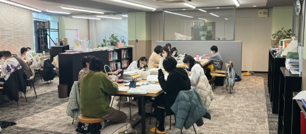
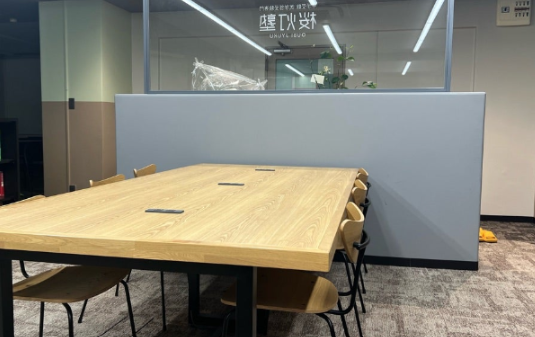
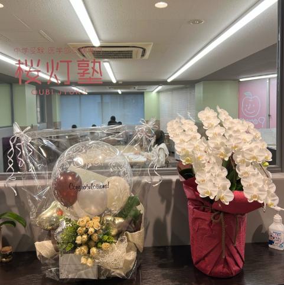

指導風景
現役医学部生講師による熱意あふれる指導の様子です。単に答えを教えるのではなく、思考のプロセスを共有し、自学自習の質を高め、大阪公立大学の合格者がもつ常識から外れていないか確認するよう対話を大切にしています。

個別指導スペース
講師と一対一で向き合い、思考を深めるための半個室ブースです。周囲の視線を気にせず、疑問点をその場で解決できる理想的な環境です。

年中無休の自習室
「勉強し続けられる場所」として、年中無休で開放しています。静寂に包まれた空間は、受験生の集中力を最大限に引き出します。

面談・カウンセリング室
塾長や学生講師と合格ロードマップを策定したり、進路の悩みを相談したりするための専用スペースです。ここから多くの合格戦略が生まれます。

受付・エントランス
天王寺駅から徒歩5分。ビルの2階へ上がると、清潔感のある受付が皆様をお迎えします。講師と生徒が活発にコミュニケーションを取る明るいエリアです。